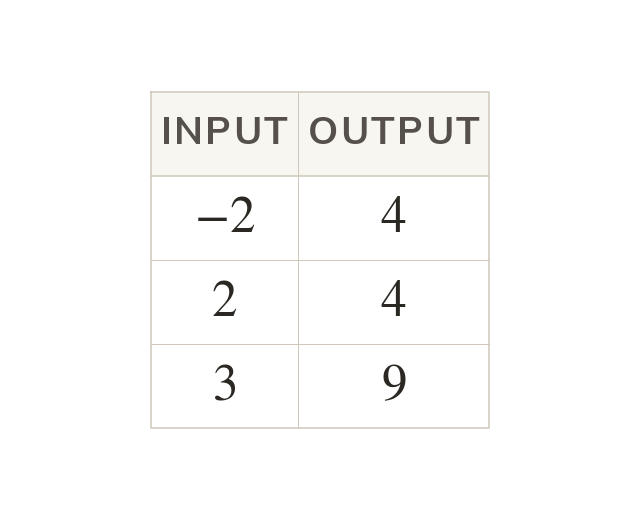
A mapping
A mapping sends each input in the domain to an output in the range. → sends and both to
Before two functions can be combined or a function reversed, we need to know exactly which inputs it takes and which outputs it gives. Today's domains and ranges decide, in and when exists and what the domain of an inverse function is.
Work down the page at your own pace. Write every answer in your book first, then click to check it.
Read each card, then follow the worked examples one step at a time.

A mapping sends each input in the domain to an output in the range. → sends and both to
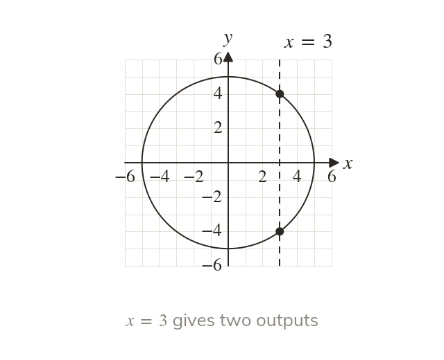
A function gives exactly one output for each input, so a vertical line meets its graph at most once. The circle is not a function, since gives and
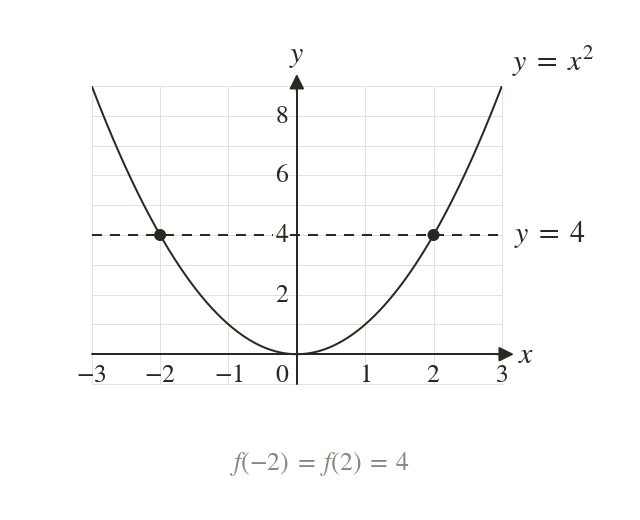
In two inputs share the output so it is many-to-one. In each output comes from one input, so it is one-to-one.
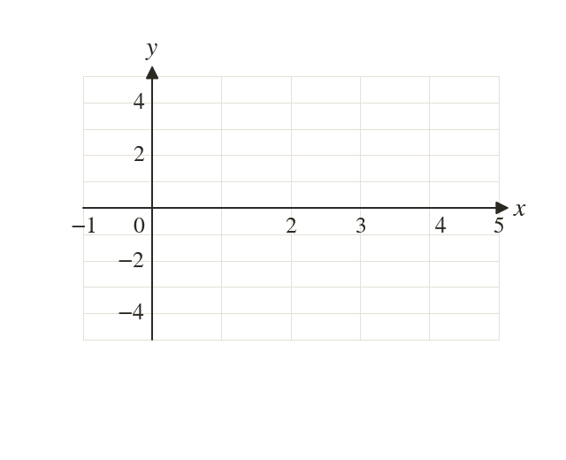
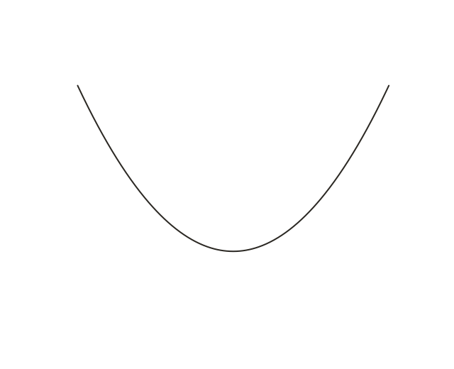
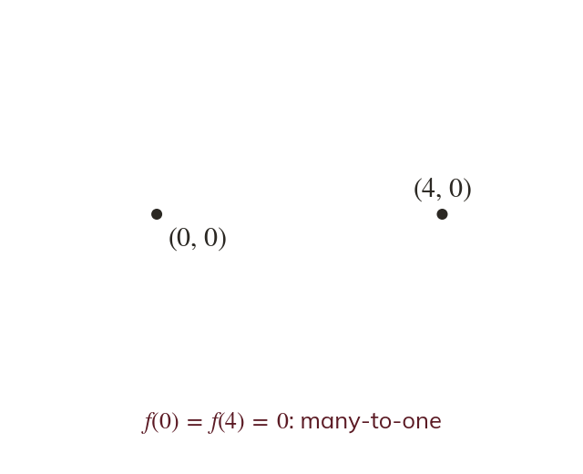
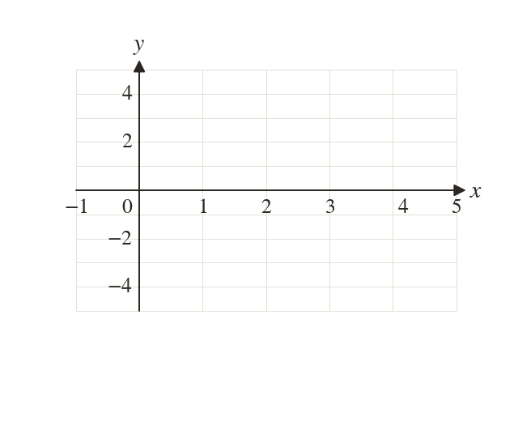
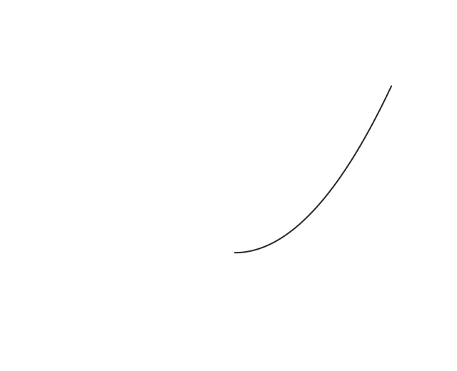
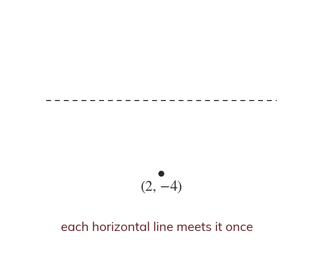
Pick an answer. If it's wrong, the feedback tells you which mistake it was.
Write the blanks in your book first, then tap each one to check.
Read each card, then follow the worked examples one step at a time.
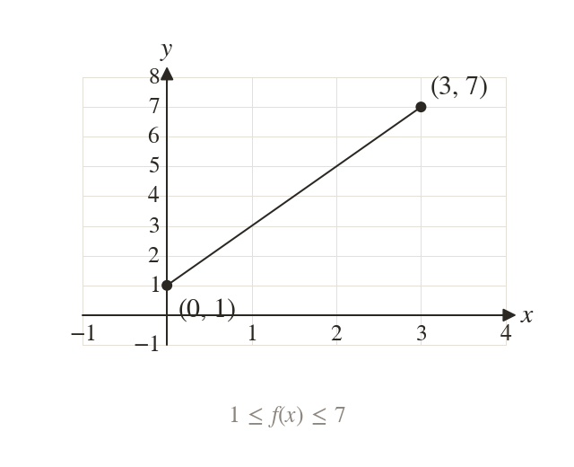
The range is the set of outputs. For on the outputs run from to so
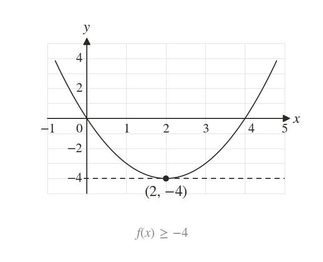
for all real has its minimum at Every output is or more, so the range is
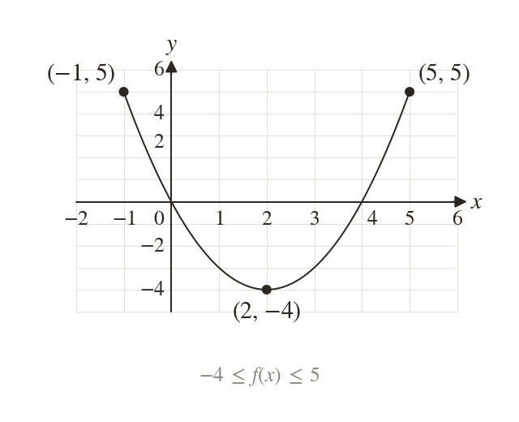
On , is lowest at not at an end. and so
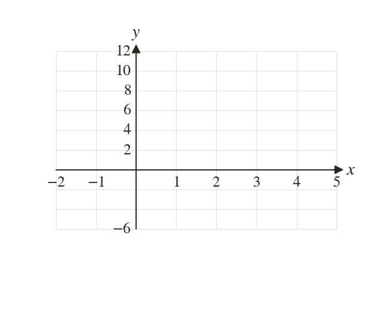
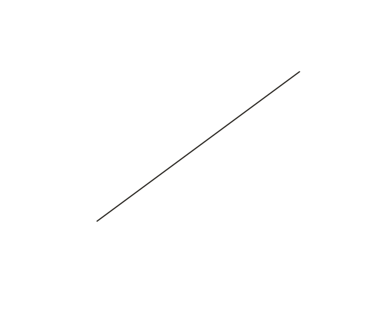
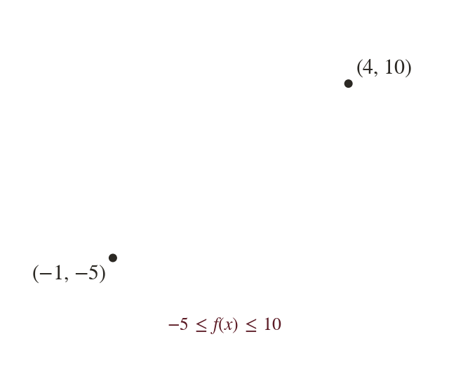
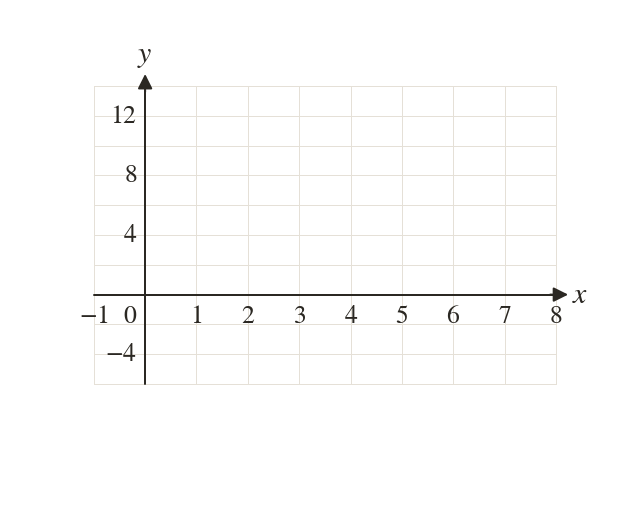
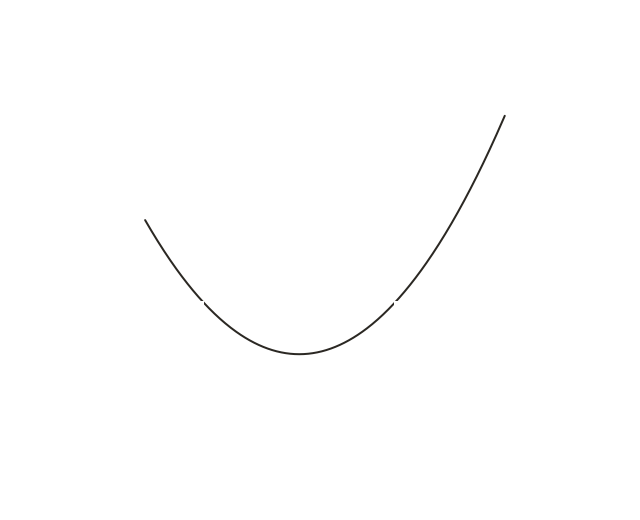
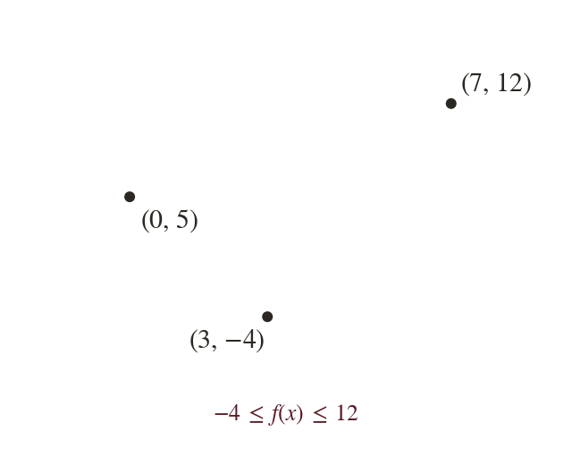
Pick an answer. If it's wrong, the feedback tells you which mistake it was.
Write the blanks in your book first, then tap each one to check.
Finished? Next lesson: 13.P2.2b Solving Equations with Functions.
For each skill, tap the one that is true for you today. Your Revise pages start with anything you mark Not yet.
Your ratings are saved on this device only.
Log in, then search for a code to practise that skill.